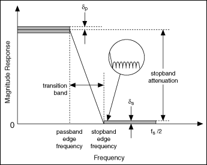
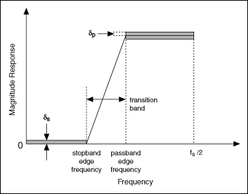
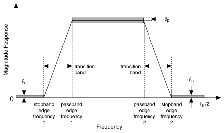
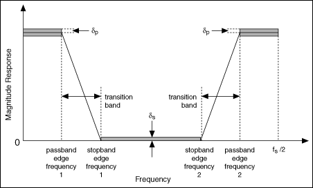

Ideally, a filter has a unit gain (0 dB) in the passband and a gain of zero (-∞ dB) in the stopband. However, real filters cannot fulfill all the criteria of an ideal filter. In practice, a finite transition band always exists between the passband and the stopband. In the transition band, the gain of the filter changes gradually from one (0 dB) in the passband to zero (-∞ dB) in the stopband. Practical filters might have passband ripple, and the stopband attenuation of the filter cannot be infinite.
For most digital filters, you typically design the digital filter response in the frequency domain. The frequency response specification for the digital filter typically includes the target magnitude response, phase response, and the allowable deviation for each. The following figure illustrates the magnitude frequency response of a lowpass filter, which allows low frequencies to pass and attenuates high frequencies.
The frequency range from the passband edge frequency to the stopband edge frequency is the transition band, which has a frequency response that is unspecified. The filter passband and stopband can contain oscillations, which are known as ripples. A typical example of a ripple appears in the circle of the previous figure. δp indicates the magnitude of the passband ripple, which equals the maximum deviation from the unity. δs indicates the magnitude response of the stopband ripple, which equals the maximum deviation from zero.
Notice the transition band between the passband and stopband frequencies. In an ideal design, a digital filter has a target gain in the passband and a zero gain (-∞ dB) in the stopband. In a real implementation, a finite transition region between the passband and the stopband, which is known as the transition band, always exists. The gain of the filter in the transition band is unspecified. The gain usually changes gradually through the transition band from 1 (0 dB) in the passband to 0 (-∞ dB) in the stopband.
You can measure the passband ripple and stopband ripple in decibels, as shown in the following equations:
passband ripple = -20log10(1 - δp)
stopband ripple = -20log10(δs)
Based on the two previous equations, you can convert the passband ripple to or from the decibel representation. For example, if passband ripple equals 0.01 dB, that is, 0.01 = -20log10(1 - δp), then δp = 0.00115. Similarly, if stopband ripple equals 60 dB, that is 60 = -20log10(δs), then δs = 0.001.
The following figure illustrates the magnitude frequency responses of a highpass filter, which passes high frequencies and attenuates low frequencies.
The following figure illustrates the magnitude frequency responses of a bandpass filter, which passes a certain band of frequencies and attenuates lower and higher frequencies.
In the previous figure, stopband edge frequency 1 indicates the maximum frequency of the lower frequency range that you want to attenuate, and stopband edge frequency 2 indicates the minimum frequency of the higher frequency range that you want to attenuate. The frequency range between passband edge frequency 1 and 2 indicates the range of frequencies that can pass through the filter.
The following figure illustrates the magnitude frequency response of a bandstop filter, which attenuates a certain band of frequencies and passes all frequencies not within the band.
In the previous figure, passband edge frequency 1 indicates the maximum frequency of the lower frequency range that can pass through the filter, and passband edge frequency 2 indicates the minimum frequency of the higher frequency range that can pass through the filter. The frequency range between stopband edge frequency 1 and 2 indicates the range of frequencies that you want to attenuate.